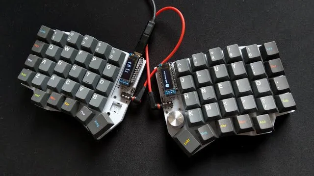
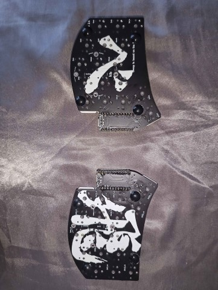

Viaje de Teclado
2/11/25
Hace varios años, me empezaban doler las manos cuanto más tecleaba para escuela, mis pasatiempos, o trabajo. Se volvió suficiente de una problema que inicié buscando información en línea sobre cómo aliviar dolor en mis muñecas. Por supuesto, hubo mucho videos y artículos sobre ejercicios de las manos para ayudar el dolor después del hecho, pero lo que actualmente me interesó fue algo que prometió que podría resolver la problema completamente: teclados ergonómicos. Quizás usted haya visto teclados ergonómicos como los que las compañías mayorías técnicos como Logitech venden, pero quiero enseñarle algo especial que nunca he visto antes de entonces: teclados partidos. Este es mi viaje con aprender sobre esos teclados especiales y otros tipos como ellos, construir mi propio, y más.
La idea atrás de teclados divididos es sencilla: partir el teclado en mitad, uno para cada mano. Esta manera, puede teclear en una forma mucho más relajado, con ambos brazos puesto para que sus brazos ni sus muñecas son torcidos en una posición antinatural. Adicionalmente, aprendiendo de este tipo de teclado además me enseñó sobre aún más opciones cuando escogiendo el teclado ergonómico perfecto. Por ejemplo, hay muchos diseños de las teclas aparte de lo que la mayoría de teclados usan. La mayoría de teclados usan un diseño donde las teclas son escaladas por fila, como resultado de la primera tecla de cada fila crecer en tamaño. Este diseño no es ergonómico porque le hace extender los dedos no solo verticalmente, pero mucho a los lados también, causar mucho estrés especialmente cuando uno dedo se mueve lejos de los demás. Uno de los mejores opciones para resolver esto es el diseño de columnas escaladas, cual que yo personalmente uso. En lugar de cada fila ser escalada, cada columna es escalada basado en el largo de cada dedo. Así, las columnas donde sus meñiques se quedan es escalada lo más abajo, las columnas donde sus dedos medios se quedan es escalada lo más arriba, y así por el estilo.
Aunque todos de esos beneficios se parecieron genial cuando lo descubrí, el más grande dificultad para mí cambiar fue que tendría que completamente aprender de nuevo cómo teclear. Esto diseño es tan diferente que pensaba mi memoria de los músculos sería todo mal, y también estaba preocupado que perdería mis habilidades para teclear con teclados de diseños normales, como mi portátil. A pesar de esto, el dolor que experimentaba cada día fue mucho más importante para resolver, para que yo lo hice. Ahora, puedo decirle con confianza, después de usar teclados divididos con columnas escaladas por muchos años, el fuerzo valió la pena, y también todavía puedo usar teclados que usaba antes de el cambio. Dicho eso, es duro regresar jamás porqué todos las ventajas he encontrado de usar esto tipo de teclado. Además de más cómodo para mis manos, también podía teclear mucho más rápido que antes después de estudiar y tratar muchos tipos de teclados ergonómicos. Junto con una nueva filosofía sobre donde las teclas debe ir, teclados ergonómicos también experimentar con cuantos teclas debería haber.
Tal vez más efectivo que cambiar la disposición de las teclas, reducir la cuenta de las teclas que tiene que usar no solo ayuda su cómodo, pero además su rapidez de teclear para el mismo razón: cuando haya menos teclas, sus dedos no necesitan alcanzar tan lejos, y por consiguiente cada tecla toma menos tiempo para pulsar. ¿Pero cómo eliminamos teclas si tengo que usar todos de ellos? La repuesta es sencilla: capas. Realmente, todos usa capas mientras tecleando cada día, aún si no lo sabe. Por ejemplo, en lugar de usando dos colecciones de teclas para las minúsculas y las mayúsculas, todos los teclados usan la tecla "Shift" para dar acceso a los dos usando las mismas teclas. Teclados ergonómicos aprovechan de esto mucho más que teclados tradicionales, encontrando varias técnicas para utilizar combinaciones de pulsaciones mas bien que agregar más y más teclas para cada carácter.
El primer teclado ergonómico que conseguí tiene 54 teclas; la mayoría de teclados estándares tiene casi doble con cerca de 100 teclas. Mi primer teclado ergonómico es capable hacerlo porque de uno mejora grave: grupos de pulgares ("thumb clusters" en ingles). Mientras todos lo demás de sus otros dedos son volando a todos lados, teclados tradicionales solamente tiene una tecla para los dos de sus pulgares. Si usted usa sus pulgares como el resto de sus dedos, puede tener acceso a mucho más capas, y mucho menos teclas. Por ejemplo, incluso con una tecla para cada pulgar, puede tener una capa para las mayúsculas, y una capa para los símbolos. Aumenta uno más, y puede tener una capa solo para números. Aún adelante, uno más para teclas de navegaciones. Cada capa quita espacio innecesario de su teclado, y sus manos van a agradecerle.

En mi propia experiencia, solo esta técnica ha prácticamente dobla mi velocidad de teclear para programación. En cambio de teniendo que alcanzar muy lejos de la fila guía para todos los simboles frecuentes en lenguajes de programaciones, solo necesito mantener uno más tecla, y entonces pulsar una tecla mucha cerca. Se acostumbrando a esto no es fácil al principio, pero no tomaba mucho tiempo para mí aprender. Además, en mi opinión, tecleando es más divertido en esta manera; siente muy listo. Si combina con otra técnica secreta, estará en la autopista a tecleando libre de dolor, y velocidad de teclear récord.
Esta técnica secreta no existe en teclados tradicionales, pero no es una idea loca. ¿Qué tal si algo diferente pasó cada vez usted mantiene una tecla en vez de simplemente lo oprime? Esta idea es la herramienta final para ayudar retirar más teclas que no necesita. Sorprendentemente, es mucho más fácil ajustar a esto cambio. Ya hay muchas teclas que todos nosotros usamos solo para manteniéndolos: "Ctrl", "Shift", "Alt", y similares. Sin embargo, la mayoría de teclas no necesitamos mantener, y para que podemos combinar esas teclas juntos. Por ejemplo, su tecla "S" podría teclear "S" cuando lo pulsa, y podría dar el efecto de "Ctrl" cuando mantenido. Una manera común entre aficionados de teclados ergonómicos para organizar esto estilo de teclas se llama "modificantes de la fila guía" ("Home row modifiers" en ingles). "Modificantes" aquí significan todos las teclas que usualmente usted mantendría en lugar de solo pulsarlos, porque el uso de ellos es modificar lo que pasa cuando pulsa otra tecla. Para cada de las teclas donde sus dedos, excluye sus pulgares, usualmente descansan, pueden volverse teclas con varios usos por esta técnica. Y también, puede eliminar las últimas teclas que necesitaría alcanzar extra para tocar en su teclado.
Si está pensarse cómo hacer esto su mismo, puedo decirle un poquito de mi historia con consiguiendo el major y más eficiente teclado para mi. Como dije arriba, compré mi primer teclado ergonómico en línea, de un sitio de web que vende teclados a medida. Entonces, después de me di cuenta que quería aun menor teclas, decidí que construiría my propio, como representado abajo. Sin embargo, para ambos teclados, mucho aprendizaje fue necesario para realizar los efectos que he mencionado. Aun así, encontré la procesa a ser muy divertido; vale la pena juguetear con algo y de verdad hacerlo su propio si es una parte tan importante de su vida diaria, como teclados para programadores o escritores y más.
El software QMK (o similarmente ZMK si quiere hacer un teclado inalámbrico) es esencial para implementar las técnicas que hemos hablado. Todos los detallas son afuera del criterio de esto artículo, pero todavía puedo dirigirle en el camino correcto para empezar. El primer paso que querrá tomar es diseñar las capas y funcionas de las teclas para su teclado. El mejor lugar para hacerlo is el QMK Configurator. Desafortunadamente, no hay un herramienta visual como este para ZMK, pero todavía hay herramientas en línea para convertir configuraciones hecho por QMK Configurator para ZMK. Se dará cuenta que hay muchas capas en la izquierda para usted crear para su teclado. Para opciones que dejarle cambiar capas, mira en el sección "Quantum". El opción más común para cambiar capas sería un tecla "LT" (significa "Layer Tap" o "Toque de Capa"), donde esta tecla da un espacio por ejemplo cuando hace un "tap", o cambia capas cuando lo queda pulsado. Para cada capa adicional que quiere en su teclado, necesita al menos una tecla "LT" o similar para accederlo. Capa 0 debe ser su capa por defecto, y probablemente va a querer todos sus teclas "LT" en esta capa para acceder las otras capas y rápidamente regresar a capa 0 cuando suelta esa tecla. Pada cada tecla "LT" que va a usar, haga seguro que el numero es lo mismo como la capa que a quiere cambiar, entonces arrástrelo a su diseño de teclado. Después, haga un clic en la caja vacía y teclear la tecla que quiere conseguir solo con un "tap."
Finalmente, para acceder la última técnica que hablamos, buscar el sección "Mod key combinations" en la ficha "Quantum" de nuevo. Si querría seguir el ejemplo que describí más temprano, arrastraría la tecla listado "LCtl_T" (para "Left Ctrl Tap" o "Toque de Ctrl Izquierda") a su distribución donde la tecla "S" es, y una vez más haga un clic en la caja vacía y teclee "S". Note que usamos la tecla "Left Ctrl" aquí porque la tecla "S" también sería en la mitad izquierda de su teclado, por lo menos si esté usando el diseño "QWERTY" (pero honestamente no importa mucho si usa "Left Ctrl" o "Right Ctrl"). Con eso, ¡tiene los básicos para diseñar el resto de su propio teclado ergonómico! No obstante, la distribución que usted diseña depende en cual teclado tiene. Es más que suficiente diseñar una nueva distribución para el teclado que ya tiene (siempre y cuando tenga un teclado compatible con QMK), ojalá usando mucho menos teclas físicamente y beneficiándose de más capas de antes. Pero si quieres mejorar las ergonomías físicas de su teclado también, o simplemente si necesita or quiere actualizar su teclado, ¡hay un poquito más para cubrir!
Si quiere comprar un nuevo teclado ergonómico, hay muchos sitios en la red para conseguir uno personalizado. Personalmente le recomendaría conseguir un teclado dividido, pero hay muchas opciones populares, como el "Moonlander", "Corne", o "Iris". Cada de esos distribuciones populares pueden ser hecho de encargo para cosas como color, interruptores mecánicos (lo cual que podría merecer su propio artículo), o funda. Pero la placa que usted escoge determinará cuantos teclas que va a tener disponible, cómo sus dedos tendrán que alcanzar el resto de las teclas, y si va a tener distintivos de QMK o ZMK. Si quiere un teclado partido y no quiere hacer mucho trabajo para personalizarlo, o simplemente quiere tratar de captar un sentimiento para teclados partidos usando algo muy querido, esos son buenas opciones para usted. Como he mencionado, también empezaba en este manera. Pero, si eventualmente o aun ahora se encuentra queriendo algo que no ofrece el mercado, o justo le encanta juguetear y hacer todo por su cuenta, haciendo su propio teclado dividido es un gran opción y también es una experiencia muy gratificando.
Para hacer su propio teclado, hay dos pasos, en no orden particular. Uno es terminar el diseño de la placa para su teclado. El otro es conseguir algunas partes para usar con la placa, al menos interruptores y microcontroladores, para el último va a necesitar dos si está haciendo un teclado partido, uno por cada mitad. Un microcontrolador es como un computadora pequeñita; es lo que comunica con el dispositivo que su teclado conectare. En adición, es lo que comunica con la otra mitad de un teclado partido. Por lo tanto, no incluso los varios interruptores que va a necesitar, los microcontroladores será el grueso del precio. Para un teclado inalámbrico, una opción popular es el "nice! nano". Para teclados con cable, hay muchas opciones como el "Liatris", "Elite-Pi", o "Sea Picro". Esos versiones con cable usualmente se conectan con un cable TRRS, para lo cual quizás necesite comprar enchufes (como estos) para añadir a los microcontroladores si ya no están adjuntos. En cuanto a interruptores, esos son un escogido muy importante para cualquiera teclado, y hay mucho recursos por la red sobre cómo tratar de elegir los adecuados para usted. La última de las partes podría ser una funda, pero no es requerido; es un elección estilístico y si piensa que su teclado y sus partes necesitarán más protección. Si quiere encontrar uno, va a tener que saber la placa que va a obtener, para que vamos a hablar de eso primero.
Aunque quizás parece muy complicado diseñar su propio placa de circuito, en actualidad hay muchos recursos desde que puede empezar y no tiene que hacer mucho trabajo por sí mismo. Por ejemplo, personalmente yo empiezé desde los archivos de diseño para el "Ferris Sweep", lo cual yo modifiqué un poquito y envié a un compañía en línea para imprimir las mitades del diseño en placas de circuitos. Para hacer esto, va a necesitar algo se llama "archivos de Gerber", lo cual es una forma de archivos para describir placas de circuitos digitalmente. Si querría el "Sweep 2" por ejemplo, vaya al link de arriba, haga un clic en el fólder se llama "Sweep 2", y busque un archivo terminando en "gerber.zip", y finalmente envíe el archivo a un sitio como JLC PCB o PCB México. Si quiere modificar el diseño en lo absoluto, puede usar un software como KiCad. Puede ver en esta foto, lo usé para poner letras japonesas en el revés de los dos, y también quitar un simbol predeterminado que ya está.

Después de completar esto, ¡solamente necesitar poner juntos las partes!
hablar de soldar y solo requerir conectar las partes correctas electrónicas con materiales conductores (metal), no necesita ser perfecto y es un buen oportunidad para aprender